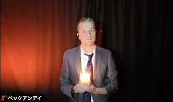

A little sweet, a lot sassy, and just the right amount of soggy fries.
We are The Third Option—a Harold-ish improv troupe doing the dang thing on Zoom.
Catch us online in our upcoming sets, which are all free to watch from the comfort of your couch, bed, bathtub… hey, live it up during the weird times, friends!
#Zoomprov is alive and well in 2021. Let’s embrace it! If you haven't tuned in to a virtual improv show, it takes about 2 minutes to get used to it. Then, you’ll be sucked right in just like you’re in a theatre. (Oh, stages. We miss you.) But this is what we got for now, so we’re making the most of it!
August 20, 2021 7 p.m. EDT at Unity Vibration Tasting Room with Cheaper Than Therapy, It's Just the Wind, and music by Dan Cook.
June 3, 2021 8 p.m. EDT on Zoom with Metro Detroit Improv
Meet the Improvisers
Brian McFarlane has studied improvisation at the Pointless School of Improv, Imprology and the Upright Citizens Brigade Theatre. He performs regularly with The Third Option and Metro Detroit Improv. He has performed as a musician with orchestras, punk bands, experimental noise artists and as a solo artist.
Emily Zdyrko

Andy Beck
Rodney Noel
Ashley Streichert joined the world of improv after studying and performing dramatic theater in Chicago, New York and Toledo. She’s thrilled to be part of such an open, gracious and hilarious group of talented improvisers. Joining the Pointless improv community and meeting these folks has really taken her skills and enjoyment to the next level.